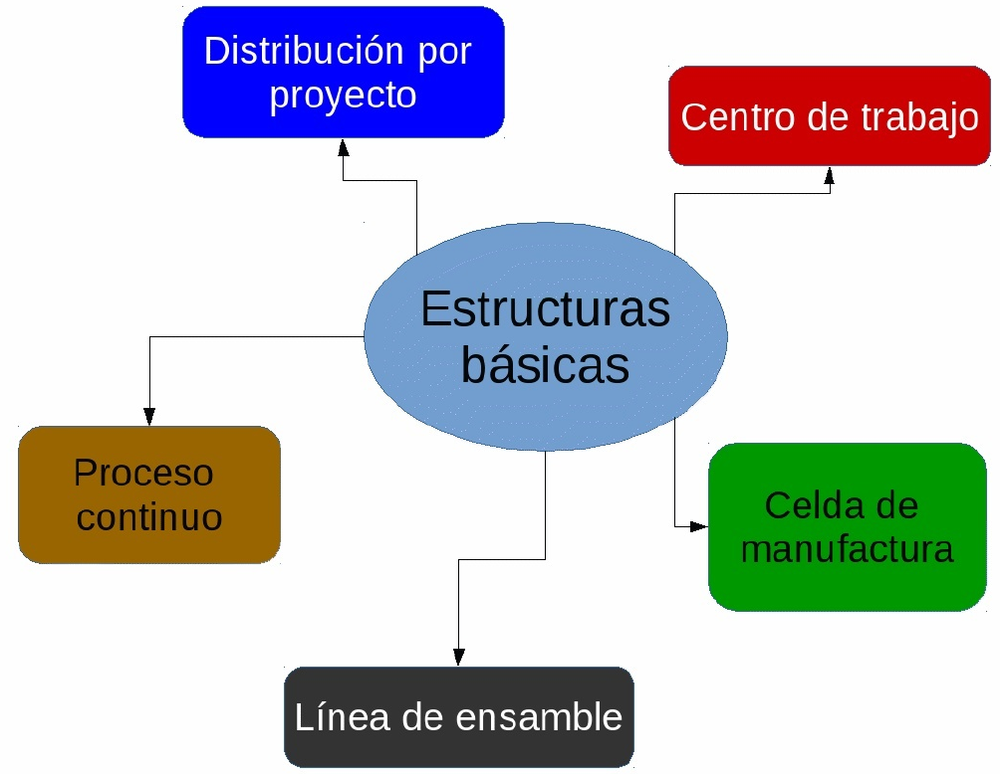
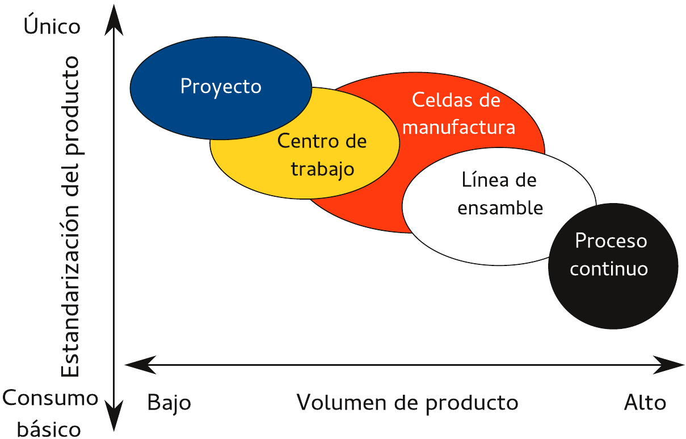

¿Alguna vez te has preguntado cómo llega tu café, tu celular o tus zapatos a tus manos?
Detrás de cada producto hay un mundo de decisiones, procesos y estrategias.
Hoy empezamos a desmenuzar ese mundo.
Objetivo final: Que puedas mirar cualquier producto y entender el sistema que lo hizo posible.
Para entender el presente, debemos viajar al pasado. La administración de la producción no nació con las computadoras, sino con la necesidad humana de organizarse para sobrevivir.
Aquí es donde la administración de la producción se convierte en una ciencia.
Adam Smith (1776): Especialización del trabajo.
Charles Babbage: Padre de la computadora. Propuso la “división del trabajo mental”. Separar la planeación (ingenieros) de la ejecución (obreros).
El gran MÉTODO CIENTÍFICO:
Taylor dijo: “No hay pereza, hay mala organización”.
Sus 4 principios:
Sin producción (de bienes o servicios), no hay producto. Sin producto, no hay venta. Sin venta, no hay empresa.
La administración de la producción es el arte de hacer más con menos, y eso se traduce en:
| Época | Enfoque | Objetivo |
|---|---|---|
| Artesanal | El maestro hace todo. | Satisfacer a un cliente específico. |
| Revolución Industrial | Máquinas y fábricas. | Producir mucho y rápido. |
| Taylorismo/Fordismo | Tiempos y línea de ensamble. | Estandarizar y bajar costos. |
| Toyotismo (1960s) | Calidad y flexibilidad. | Producir justo a tiempo. |
| Actualidad (Industria 4.0) | Datos e IA. | Sistemas que aprenden y se adaptan. |
Conclusión: La administración de la producción evolucionó de “explotar la fuerza” a “optimizar el conocimiento”.
| Característica | Feudal | Americano | Europeo |
|---|---|---|---|
| Unidad base | El feudo | Línea de ensamble | Red de proveedores |
| Objetivo | Subsistencia | Bajar costos | Calidad y variedad |
| Tecnología | Herramientas simples | Máquinas rígidas | Máquinas CNC y robots |
| Mano de obra | Poco calificada | Especializada | Polivalente |
| Innovación | Lenta | Rápida | Constante |
No hay uno “mejor”, hay uno “más adecuado”.
El reto de la administración moderna es mezclar lo mejor de cada uno:
Una panorámica muy general sobre lo que se requiere para fabricar algo se divide en tres pasos sencillos:
Según la estrategia de la empresa, su capacidad de manufactura y las necesidades de sus clientes, estas actividades se organizan para reducir al mínimo el costo sin dejar de satisfacer las prioridades competitivas necesarias para atraer pedidos de clientes.
Abordaremos cuatro de estas estrategias, a saber:
Fabricar para existencias.
Ensamblar por pedido.
Fabricar por pedido.
Diseño por orden.
Existen productos cuya fabricación llega a su forma final y se almacenan como artículos terminados. La base colectiva de clientes puede tener cierta influencia sobre el diseño general en una fase temprana del bosquejo del producto; sin embargo, un cliente individual solo tiene que tomar una decisión cuando el producto está terminado: adquirirlo o no.
El cliente cuenta con mayor influencia sobre el diseño, toda vez que puede seleccionar varias opciones a partir de subarmados predefinidos. El productor ensamblará esas opciones para formar el producto final que desea el cliente.
La base colectiva de clientes puede influir sobre el diseño general de las opciones y productos finales, pero el cliente individual solo puede hacer su elección a partir de las opciones especificadas.
Esta condición permite que el cliente especifique el diseño exacto del producto o servicio final, siempre y cuando en su fabricación se utilicen materias primas y componentes estándar.
En este caso, el cliente tiene prácticamente completo poder de decisión sobre el diseño del producto o servicio. En general, no se verá limitado a la utilización de componentes o materia prima estándar, sino que incluso podrá hacer que el productor le entregue algo diseñado desde cero.
Determina en dónde se ubica el inventario para permitir que los procesos o entidades de la cadena de suministro operen en forma independiente. Por ejemplo, si un minorista tiene existencias de un producto, el cliente lo toma del estante y el fabricante nunca ve un pedido del cliente como tal.
El inventario actúa como amortiguador para separar al cliente del proceso de manufactura. Cuanto más se acerque este punto de desacoplamiento al cliente, con mayor rapidez se le atiende.
Abordaremos cinco de ellas:

El producto permanece en un lugar fijo, debido a sus dimensiones o peso, y el equipo de producción va hacia él. Los predios de obras, tales como casas y caminos, son ejemplo de este formato. Habrá ciertas áreas del lugar designadas para distintos propósitos, como material, construcción de sub-ensambles, acceso para maquinaria pesada y para la administración.
Llamado también como taller de trabajo, es donde se agrupan equipos o funciones semejantes, como todas las perforadoras en un área y todas las troqueladoras en otra. Así, la pieza que se produce pasa, según una secuencia establecida de operaciones, de un centro de trabajo a otro, donde se encuentran las máquinas necesarias para cada operación.
Se refiere a un área dedicada a la fabricación de productos que requieren procesamientos similares. Estas celdas se diseñan para desempeñar un conjunto específico de procesos y se dedican a una variedad limitada de productos.
Una empresa puede tener muchas celdas diferentes en un área de producción y cada una de ellas está preparada para producir con eficiencia un solo producto o un grupo de productos semejantes. En general, las celdas están programadas para producir conforme se necesita para responder la demanda de los clientes.
Se refiere a un lugar donde los procesos de trabajo se ordenan en razón de los pasos sucesivos que sigue la producción de un artículo. De hecho, la ruta que sigue cada pieza es una línea recta. Así, las piezas separadas pasan de una estación de trabajo a otra con un ritmo controlado y según la secuencia necesaria para fabricarlo.
Similar a una línea de ensamble ya que la producción sigue una secuencia de puntos predeterminados donde se detiene, pero el flujo es continuo en lugar de mesurado. Estas estructuras están muy automatizadas y constituyen una máquina integral que puede funcionar las 24 horas del día para no tener que apagarla y arrancarla cada vez, porque ello resulta muy costoso.
La conversión y procesamiento de materiales no diferenciados como el petróleo, productos químicos y medicamentos, son un buen ejemplo.

Administración de la Producción